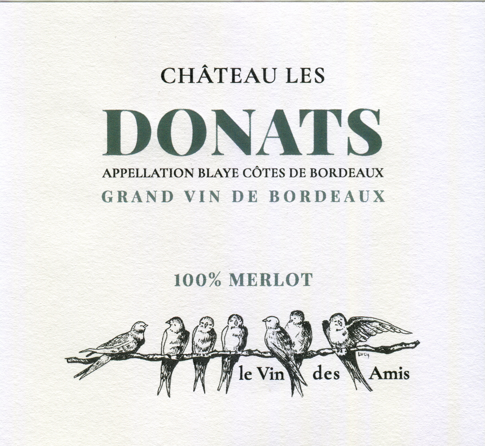

Château Les Donats
GRAND VIN DE BORDEAUX

Château Les Donats
Blaye Côtes de Bordeaux
Vin charmeur, souple et généreux, avec une bouche fruitée et gourmande, des tanins fondus. Les Donats peut se déguster dès son plus jeune âge. « Le vin des copains » !
Distinctions
- 2022Médaille d'Or – Concours des Vins de Bordeaux
- 2020Cité au Guide Hachette des Vins